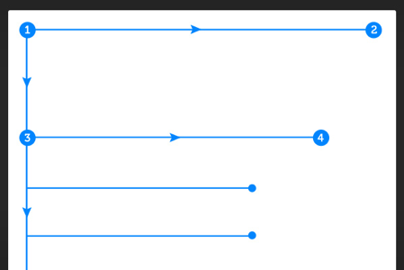
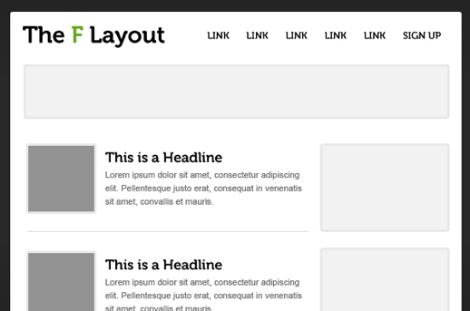
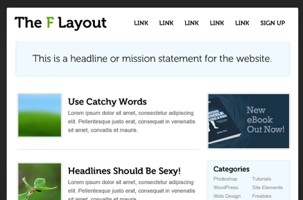
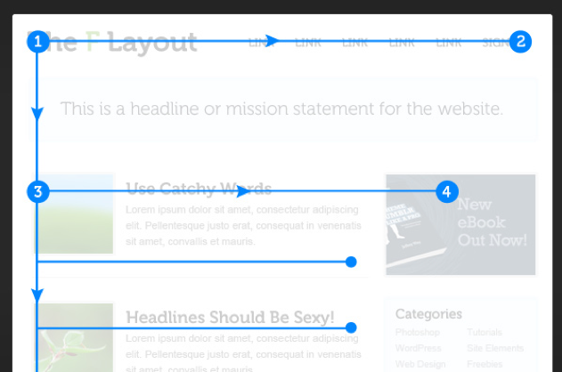

LAYOUT
F LAYOUT:
Today we're going to examine the "F Pattern Layout". Rather than trying to force the viewer's visual flow, the F-Layout gives in to the natural behaviors of most web surfers and it uses scientific studies to back it up. This tutorial will walk you through the principles of the F-Layout, why it works, and how you can create your own.
INTRODUCING THE F LAYOUT:
The F-Layout relies upon various eye tracking studies for it is foundational concept. These scientific studies show that web surfers read the screen in an "F" pattern - seeing the top, upper left corner and left sides of the screen most... only occasionally taking glances towards the right side of the screen. These eye tracking studies argue in favor of placing the most important elements of your site (branding, navigation, call to action) on the left side of the design. Let's take a peek at a heatmap using Web design tuts+ as the example:
This heatmap shows the abstract F shape that user's general gravitate towards. Hot spots (red/orange/yellow) represent where user's attention lingers the longest. Here is the general behavior pattern:
• Visitors start at the top left of the page.
• Then they scan the top of the site (navigation, subscription, search, etc.)
• Next they move down, reading the next full row of content... all the way to the sidebar.
• Last, surfers enter a "scanning pattern" once they hit the bulk of the site content.
Let's take a moment to turn this pattern into a barebones wireframe: Reading is largely done the same way that a book is read: top to bottom, left to right; Sidebar content is often dismissed below the "fold", and usually is only scanned briefly. The bulk of the attention stays within the main content column where, in this case, the article listing is located. A close inspection reveals a visual hierarchy that you might logically expect:
•The brand-mark and navigation occupy the visitor's attention first and foremost.
•Within the contest structure, images receive the greatest level of attention.
•Headlines come next.
•Text appears to be scanned, not read thoroughly.
APPLYING THE F-LAYOUT TO A DESIGN:
First, let's sketch out the rough placement of our main content elements using a wireframe method:
Notice that we're trying to make our primary "mission statement" as near to the top of the page as possible in an attempt to communicate the site's purpose quickly. We're also giving in to the visitors’ desire to "scan" content by breaking our design into two main columns... one for our primary content, the other for ancillary information (the sidebar). Next, let's add some actual content to the design to see how it looks:
Below the top row, we're using images and "catchy" headlines to grab a surfer's attention... even if they are only interested in scanning the content, there's a good chance they'll be able to find something of interest.
We're also trying to capitalize on the second-row of the "F" by placing an advertisement or "call to action" here (#4).
Now, let's overlay the original F-layout to see how we match up:
One thing to note here is that the height of each of the two rows on top of the "F" can be variable. Some designers might opt to leave them as thin as possible to encourage users to begin scanning right away; others might choose to make it a much more dominant part of the design. What happens when you want to break the surfer out of the "scanning pattern" though? You certainly don't benefit from a bored user if they begin to dull everything out, so let's add one "awkward" element within the scanning area to keep the user interested.

This technique of "breaking the expectations" of the layout can be useful when you have really long vertical spans of content that feel dull or boring once you scroll past the first couple headlines. By throwing the viewer a curveball, you can keep the users moving around your site by providing visually interesting elements 1000, 2000, even 3000 pixels below the fold.
WHY IT WORKS?
The F-Layout works because it allows web-surfers to scan content naturally. The layout feels comfortable because people have been reading top to bottom, left to right for their entire lives. The implications of this behavioral pattern are something of a double-edged sword though:
•Users aren't going to read each and every word on the page. In fact, most readers won't really even bother reading the excerpt of an article. Anything past a headline is probably only going to be there for SEO purposes.
•Images and Headlines are only reliable if they are interesting and engaging.
If this all sounds like you're designing a site more like an advertiser would than a designer, you'd be right. Most sites that rely heavily on the F-Layout also rely on advertising or other "call to action" pitches in the sidebar to drive revenue or some other sort of user-engagement. This isn't necessarily a bad thing (hey, are those advertisements over there on our sidebar?!), but it does underline the relationship between the content and the sidebar... the content is king, the sidebar is usually there to get you involved in something that will take you to another level.
So what does this mean for a sidebar? An effective relationship between content column and sidebar column in a design will utilize the sidebar in one of two ways:
1.To feature "relevant" content. This could be an advertisement, a listing of "related articles", a Social Media widget, etc.
2.As a tool for users to find specific content. The obvious example is a searchbar, but it would also be a category listing, a tag cloud, a "popular posts" widget, etc.